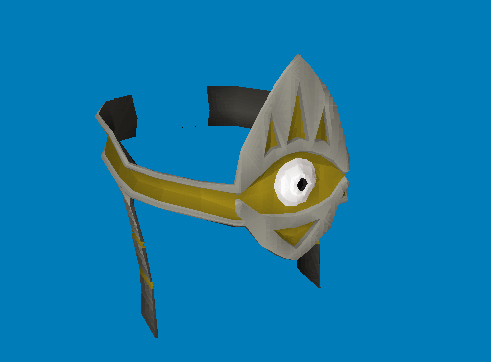

Model viewer

Overview
A user-friendly model viewer designed for RSPS cache files. It allows fast and efficient previewing of 3D models with basic rotation and inspection features, and also supports exporting models to dat files for further use or modification. This project is non-profit and created for personal/hobby purposes. It is intended to assist the community and is not affiliated with any official game developers.